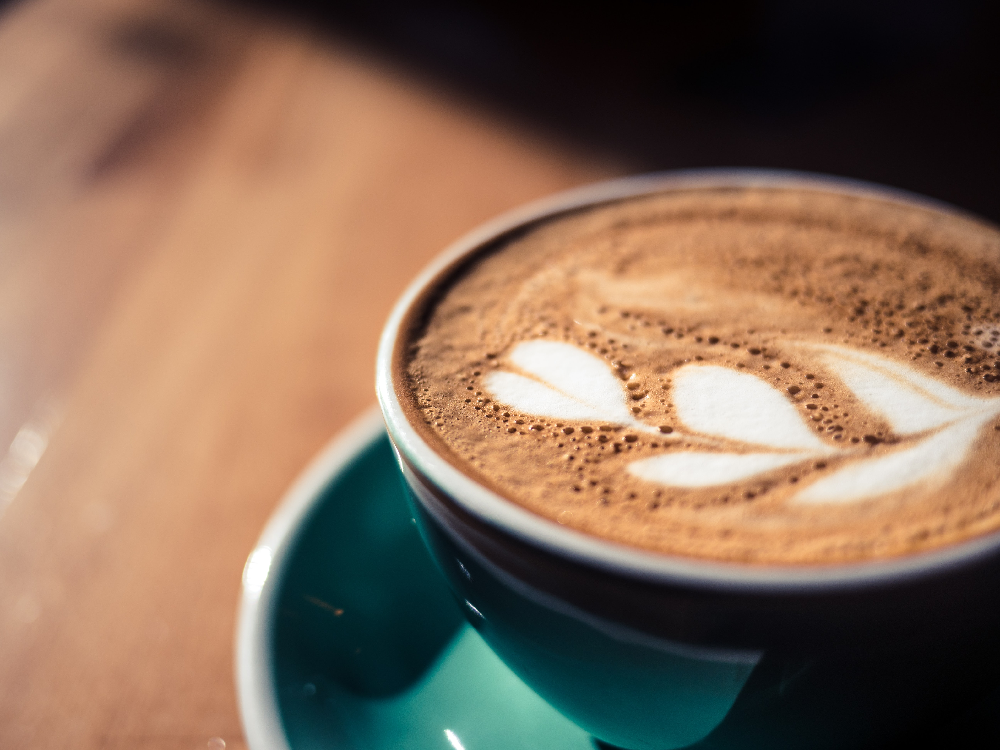
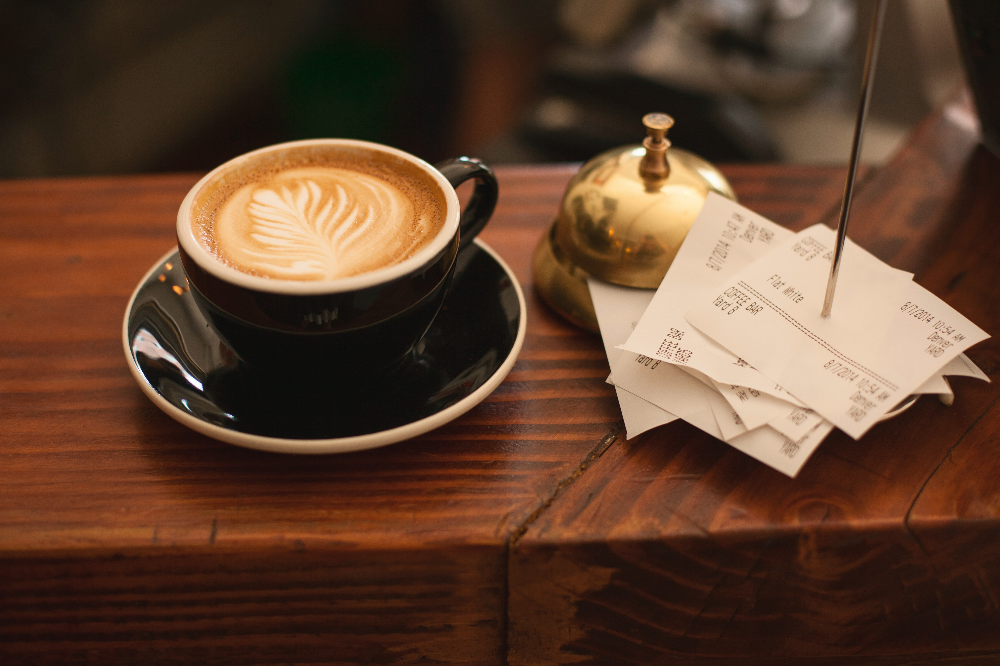

Cappuccino

Water, coffee, air and milk. These are the four essential elements in the Italian caffetteria recipe and cappuccino is one of its hallmarks. As it passes through a pad of finely ground coffee, softened water absorbs the quintessential features and is transformed into an elegant espresso topped with the signature nut brown crema while accompanied by the classic aroma. Meanwhile, the steam wand blows hot air through the milk generating a whirlpool which modifies its structure and turns it into a soft, fine creamy milk.
Espresso
Espresso, (Italian: “fast, express”) a strong brew of coffee produced by forcing boiled water under pressure through finely ground coffee. The finely ground coffee beans means an increased amount of surface contact with the water, resulting in a highly flavoured and aromatic brew. The nuances of brewing and enjoying the drink have spurred international barista championships and detailed discussions of the drink by aficionados worldwide. Espresso is especially associated with Italy, where it is woven into the fabric of daily life. A culture of refinement has long surrounded this dark, rich, and exotic beverage, an aura doubtless tied to the beginning of coffeehouses in the Middle East in the 15th and 16th centuries, when such establishments attracted the leading thinkers and writers of the day. But the surprising truth is that espresso is an innovation of the late 19th and early 20th centuries. In fact, espresso is arguably the first example of “fast food,” its very name meaning speed.
Latte

The iconic latte is a beverage that’s loved in coffee shops all over the world. The subtle coffee taste and creamy flavouring makes it a coffee that’s universally cherished by even the most casual of caffeine indulgers. With that being said, many don’t actually know what a latte is, the drink’s origin or the difference between a latte and a cappuccino. Keep reading to find out all you need to know…
Americano
When you’re presented with an americano, you’ll be forgiven for thinking it’s just your standard, run of the mill black coffee. The brew is becoming a favourite amongst coffee connoisseurs looking for a bold, strong cup that’s not bothered by all the frills of steamed milk or froth. Keep reading to find out what is an americano and how it differs from other coffee types…
Decaf
Although this coffee was not created specifically for Christmas, it is often a favourite around this time of year, particularly for its alcoholic content and warmth, which are both in high demand around the festive period. You will recognise an Irish coffee as being served in a handled toddy glass, but what is an Irish coffee?
Irish Coffee
Although this coffee was not created specifically for Christmas, it is often a favourite around this time of year, particularly for its alcoholic content and warmth, which are both in high demand around the festive period. You will recognise an Irish coffee as being served in a handled toddy glass, but what is an Irish coffee?